Übersicht
Fragenanalyse
Definitionen
Übersicht
Wir nehmen an, dass für mindestens einen Studierenden ein Ergebnis existiert, d.h.  .
.
Anzahl an ausgewertetn Ergebnissen.
Maximale Punktezahl, die ein(e) Teilnehmer/in erreichen kann.
Höchste bzw. niedrigste erreiche Bewertung die von Teilnehmer/innen erreicht wurden.
Wir berechnen den Durchschnitt aller Bewertungen (hochgerechnet auf die maximale Bewertung des Offline-Tests).
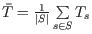.
Alle Bewertungen (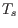) werden sortiert. Falls ungerade ist, wird der Wert in der Mitte genommen. Falls gerade ist, wird der Mittelwert der beiden Werte in der Mitte berechnet.
Die Standardabweichung aller Bewertungen (hochgerechnet auf die maximale Bewertung des Offline-Tests).
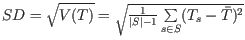.
Die Schiefe der Bewertungsverteilung (engl. skewness) beschreibt die ,,Neigungsstärke'' der statistischen Verteilung der Bewertungen. Sie zeigt an, ob und wie stark die Verteilung nach rechts (positive Schiefe) oder nach links (negative Schiefe) geneigt ist.
Die Wölbung (engl. kurtosis) ist eine Maßzahl für die Steilheit bzw. ,,Spitzigkeit'' der statistischen Verteilung der Bewertungen. Verteilungen mit geringer Wölbung streuen relativ gleichmäßig. Bei Verteilungen mit hoher Wölbung resultiert die Streuung mehr aus extremen, aber seltenen Ereignissen.
Wir berechnen zuerst:
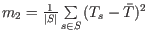
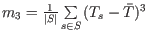

Dann berechnen wir:
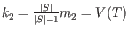
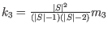
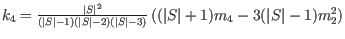
Dann ist die Schiefe der Bewertungsverteilung:

und die Wölbung der Bewertungsverteilung:
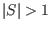
Der Koeffizient interner Konsistenz (Cronbachs Alpha, oder Alpha) ist eine nach Lee Cronbach benannte Maßzahl für die interne Konsistenz einer Skala und bezeichnet das Ausmaß, in dem die Aufgaben bzw. Fragen einer Skala miteinander in Beziehung stehen (engl. interrelatedness). Es ist hingegen kein Maß für die Homogenität oder Eindimensionalität einer Skala. Wir berechnen den Koeffizienten interner Konsistenz (CIC) wiefolgt:
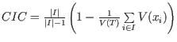.
Diese Werte geben Auskunft über die Zuverlässigkeit der Testergebnisse.
Wir nehmen an, dass das Ergebnis, das eine Studentin bei einem Test erzielt hat eine Kombination von
tatsächlichem Können und von Zufallsfehlern ist (wieviel Glück hatte die Studentin). Der Standardfehler ist dann eine Schätzung des Glücksanteils.
Wenn der Standardfehler also z.B. ungefähr 10 ist und die Studentin 60 Punkte erreich hat, dann kann man annehmen, dass das eigentliche Können zwischen
50 und 70 Punkten liegt.
Der Fehlerquotient (als Prozentwert) wird berechnet als:
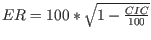.
Der Standardfehler wird wiefolgt berechnet:
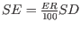
Fragenanalyse
Der Leichtigkeits-Index (engl. facility index) beschreibt, wie leicht bzw. schwer eine Frage für die Studierenden war.
Haben z.B. zwei Studierende ein Item beantwortet, wobei ein Studierender 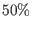 und der andere 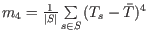 der Punkte erreicht hat, dann beträgt der Leichtigkeits-Index  . Der Leichtigkeits-Index wird also prozentual ausgedrückt:
. Der Leichtigkeits-Index wird also prozentual ausgedrückt:
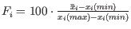.
Die Standardabweichung einer Frage ist ein Maß für die Streuung der erreichten Bewertungen für diese Frage um die durchschnittliche Bewertung.
 .
.
Gibt die Gewichtung der Frage im Test an, d.h. wieviel Prozent die Frage Gesamtergebnis beisteuert:
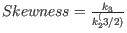.
Die effektive Gewichtung ist ein Schätzung für den Anteil einer Frage an der Varianz der erreichten Bewertungen.
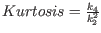
Der Korrelations-Koeffizient zwischen and 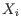 prozentual ausgedrückt:
 .
.
Definitionen
- 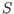 ist die Menge der Studenten für die ein Ergebnis existiert. ist die Anzahl der Elemente in .
- 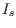 ist die Menge der Items (Fragen), die von den Studierenden 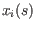 in einem Offline-Test beantwortet wurden.
- 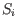 ist die Menge der Studierenden, die das Item (die Frage) beantwortet haben.
 ist das Ergebnis, den der Studierende 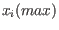 für erreicht hat.
ist das Ergebnis, den der Studierende 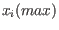 für erreicht hat.
-
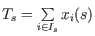 ist das komplette Ergebnis für den Studierenden hochgerechnet auf die maximale Bewertung des Offline-Tests.
- 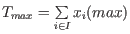 ist die maximale Bewertung für Item hochgerechnet auf die maximale Bewertung des Offline-Tests.
- 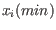 ist die minimale Bewertung für Item hochgerechnet auf die maximale Bewertung des Offline-Tests.
-
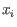 ist die maximale Bewertung für den Offline-Test.
-
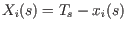 ist die restliche Bewertung für einen Studierenden und ein Item .
-
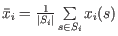 ist die durchschnittliche Bewertung für Item über alle Studierende. Analog für andere Werte.
Wir nehmen an, dass mindestens zwei Studierende das Item beantwortet haben, d.h. 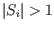.
Dann sind:
-
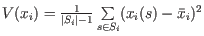 die Varianz der Bewertung für Item , und
-
 die Kovarianz von und .
die Kovarianz von und .